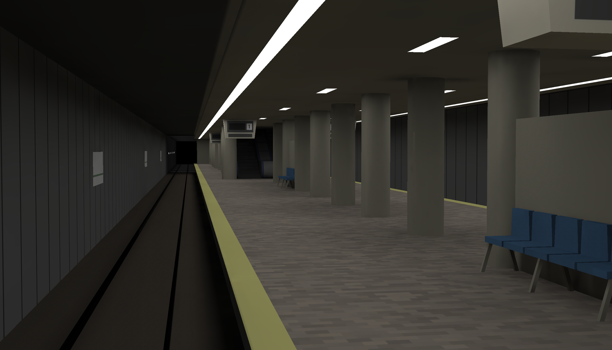
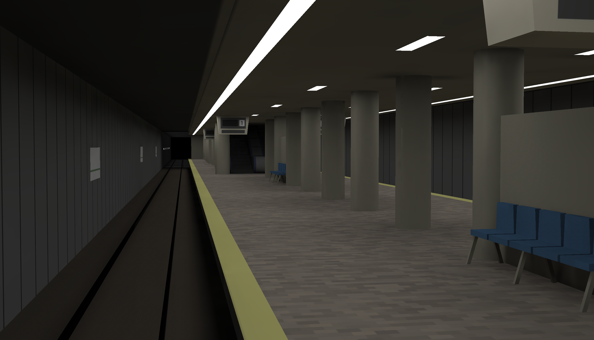

About

制作期間 : 約1年（2021.9〜）
使用技術 : C#・Unity・Blender
Unityを使用して、駅の様子を再現しています。
駅の人の流れなどをぼんやりと眺めるのが好きで作った作品です。
そのためビジュアルよりも人や車両の動きに重点を置きながら作りましたが
モデル・テクスチャ等も全て自作しています。
UnityやC#はほぼ初めての状態から作り始めたこともあり最初の方は結構苦戦しました。
一番時間がかかったのはNavmeshというUnityデフォルトの機能のところで
かなり不可解な動きをするところが多く、また乗客の動きに関わってくるため
調整にかなり時間がかかりました。（今でも納得出来てはいません）
Image
 
